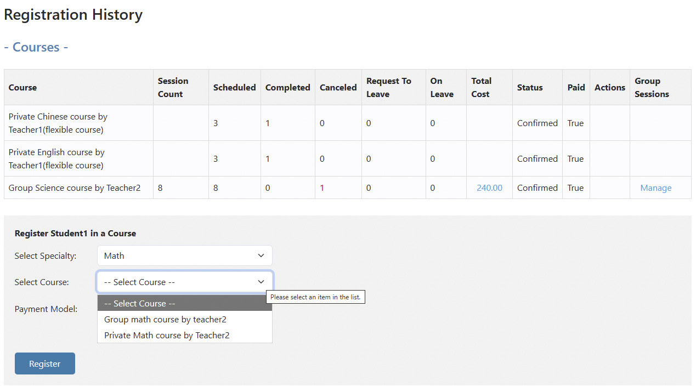
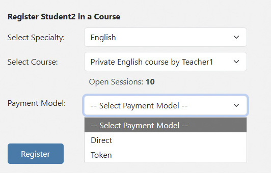
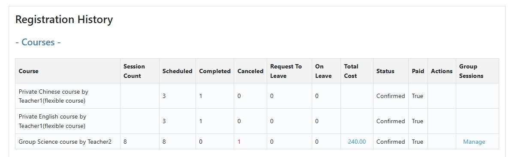

Flexible Course Registration
More ways to teach. More ways to charge. One place to keep it organized.
Not every tutoring business works the same way.
Some students take private lessons. Others join group classes. Some want to try a lesson before committing. Some courses are paid lesson by lesson, while others are paid as a complete program.
Your software should not force all of those students into the same model.
ClassLift gives tutoring businesses the flexibility to register students in a way that fits how they actually teach and charge.
Private Lessons or Group Courses
Your business does not have to fit into one course format.
ClassLift supports both one-on-one and group courses, giving you the flexibility to offer different learning experiences to different students.

A student can participate in different courses while their registration history stays organized in ClassLift.
Let New Students Start with a Trial
Not every student is ready to commit immediately.
A trial lesson gives new students an easier way to experience a course, meet the teacher, and decide whether it is the right fit.
ClassLift supports one-time trial sessions, giving tutoring businesses more flexibility in how they welcome new students.
It is a simple way to make the first step easier.
Choose How You Charge
Different courses can require different payment models.
You might charge for individual lessons, collect payment for an entire course, or allow students to use available Tokens.
ClassLift gives you flexibility in how students register and pay, so your course structure does not have to revolve around one billing model.

The goal is not to make your business adapt to the software. It is to give you room to run your courses the way that works for you.
Keep Registration History Organized
As students take more courses, it becomes increasingly useful to have a clear record of what they have registered for.
ClassLift keeps course registrations together so you can quickly understand participation across different courses.

That becomes especially valuable as your tutoring business grows and students return for additional courses.
More Flexibility for Your Tutoring Business
- Offer private lessons or group courses.
- Let new students start with a trial.
- Charge per session or for a complete course.
- Support Tokens or direct payment.
ClassLift gives you the flexibility to build course registration around the way your tutoring business actually works.
More ways to teach. More ways to charge. One place to keep it organized.
Ready to simplify course management?